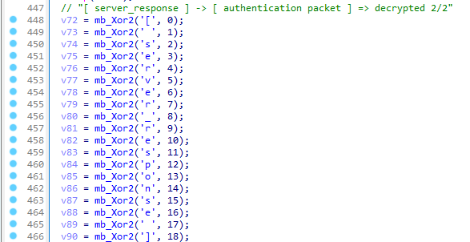

6th August 2022
Everyone is after a public, undetected kernel injector within the game hacking scene at the moment. This project is available on github and promises a lot: works for every game, undetected, and EAC and BattlEye emulation.
https://github.com/Skengdoo/be-eac-injector
This seems like an overpromise to me and highly suspicious so I decided to reverse it for malware. The injector works but it's certainly not undetected and there's definitely no anticheat emulation. There has since been an errata on the README from when I started reversing stating that the anticheat emulation isn't available in the public release.
It's not malicious. The compiled injector.exe contains an embedded exe which it drops to disk, executes, and then deletes. The dropped .exe contains two embedded Windows .sys drivers: Intel's iqvw64e.sys driver which can be exploited for kernel read/write from userland (https://www.exploit-db.com/exploits/36392) and a custom driver (named \\\\.\\PUSSY by the developer). The dropped .exe exploits the intel driver to map the custom PUSSY driver. This functionality is exactly how kdmapper works: https://github.com/TheCruZ/kdmapper. With the custom driver mapped, the original injector.exe writes your DLL to inject into the target process along with some shellcode to call the Dll's entry point, and executes the shellcode in the target process from userland via SetWindowsHookEx.
This is the initial file you execute.
It starts with a fake "loading" prompt and then loads the driver (via the embedded .exe).
There's lots of stack strings all over the place but they don't do anything for obfuscating the text. I imagine it's a mistake by the developer when implementing the obfuscation, I can't tell.
Here it writes the embedded .exe to disk at C:\Windows\SoftwareDistribution\Download, executes it, and deletes it.
sub_1400036C0 builds the filepath:
Execution is performed using runas with ShellExecuteW.
After the embedded .exe has run (and loaded the intel driver and custom driver) it opens a handle to the custom driver.
Now we're looking at the embedded .exe which loads the intel driver and the developer's custom driver.
It writes the embedded Intel iqvw64e.sys driver to disk at C:\Users\username\AppData\Local\Temp with a random name (I think) and then loads it via NtLoadDriver and opens a handle to it.
To load via NtLoadDriver it needs to create a registry entry for the driver at SYSTEM\\CurrentControlSet\Services with an ImagePath and Type value.
At this point the intel driver is loaded.
It then grabs the base address of the currently loaded ntoskrnl.exe via NtQuerySystemInformation for use in pattern scanning later.
And proceeds to clear traces of the intel driver having been loaded and then delete the dropped driver from disk. The functions that clear traces are basically the exact same as how kdmapper does it.
ClearPiDDBCacheTable - https://github.com/TheCruZ/kdmapper/blob/3a21e3a5a8955633d6b8fb159ae605420e44802e/kdmapper/intel_driver.cpp#L618ClearKernelHashBucketList - https://github.com/TheCruZ/kdmapper/blob/3a21e3a5a8955633d6b8fb159ae605420e44802e/kdmapper/intel_driver.cpp#L769ClearMmUnloadedDrivers - https://github.com/TheCruZ/kdmapper/blob/3a21e3a5a8955633d6b8fb159ae605420e44802e/kdmapper/intel_driver.cpp#L437These are the patterns it uses
66 03 D2 48 8D 0D + 0x0681 FB 6C 03 00 C0 0F 84 ?? ?? ?? ?? 48 8D 0D + 0x0F
Lastly it exploits the intel driver to call ExAllocatePoolWithTag and allocate memory in the kernel for the custom driver (verifies the DOS header etc.).


This driver implements 4 functions: allocate memory, free memory, protect memory (change page protections), and read/write to memory.
It creates a driver object and symbolic name: \\\\.\\PUSSY and \\DosDevices\\Pussy.
Here's the major functions. Everything is inside IRP_MJ_DEVICE_CONTROL.
IRP_MJ_DEVICE_CONTROL
0x3009CE20 is read/write to memory (with standard MmCopyVirtualMemory)0x3009D0E0 changes memory protection (KeAttachProcess and ZwProtectVirtualMemory)0x3009D220 allocates memory (KeAttachProcess and ZwAllocateVirtualMemory)0x3009D4E0 frees memory (KeAttachProcess and ZwFreeVirtualMemory)Now that the custom driver has been loaded by exploiting the Intel driver we're back to the original injector.exe. All that's left for the injector to do is write the DLL into the target process and execute it.

It finds the process to inject into via the window class name (taken from user input):
Instead of emulating the anticheat in any way it prints a fake log implying that it has. Presumably the developer has removed this functionality.

It allocates memory for the driver in the target process, performs base relocations, and resolves imports.


Maps the DLL section's (interestingly it doesn't write the DLL's PE header).
And calls the DLL.
Here it builds the shellcode to call the DLL's entry point (remember that 0x3009D220 allocates memory and 0x3009CE20 writes memory).
It then calls the shellcode in the target process via SetWindowsHookEx and PostThreadMessageA with WM_NULL, removes the hook, and frees the shellcode afterwards.
Here's a copy of the shellcode after it's been built. It simply calls the Dll's entry point.

It's kdmapper with a custom driver to read, write, and allocate memory and uses SetWindowsHookEx to execute shellcode in the target process which calls DllMain. It's a bog standard DLL injector. There's no anticheat emulation. Without the anitcheat emulation the injected DLL will be detected (it's a RWX region not backed by a loaded, signed module). If there really is anticheat emulation then how you map the DLL doesn't matter because the anticheat won't be doing anything. It's not malicious but without the anticheat emulation it's not a useful kernel injector either.